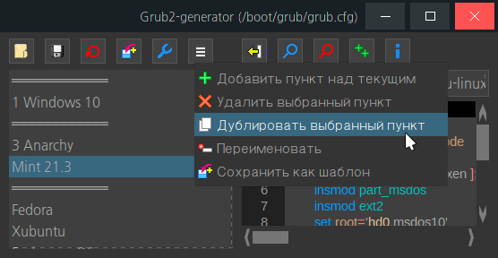
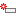

Grub2-generator
Назначение
Редактор конфигурационного файла Grub2.

Работа с программой
Назначение
Иногда нужно быстро создать меню Grub2, добавив пункты LiveCD, поиск загрузчиков и OS: Windows, Linux, Grub4Dos, syslic и т.д. Для этого приходится искать готовые шаблоны в интернете, вставлять их в конфиг. Некоторые из этих задач решает утилита, вставляет заготовленные в папке template фрагменты кода, анализирует код и предоставляет его в виде фрагментов кода, которые можно исправлять, перемещать, добавлять, удалять и т.д.
Работа с программой кратко
- Запустить программу, в Linux откроется /boot/grub/grub.cfg, в Windows откроется grub.cfg рядом с программой.
- Добавить/удалить/переместить фрагменты кода.
- Сохранить в новый или тот же файл.
Основное
При старте формируется внутренний массив данных, который отображается в интерфейсе программы в виде списка пунктов. Справа поле просмотра класса и ниже окно просмотра пункта или фрагмента кода. После изменения необходимо применить или точнее сохранить новые данные во внутренний список. Сохранение в конфиг делает последовательное соединение фрагментов кода в один файл. При этом оригинал не совпадает с сохранённым, потому что используется собственное форматирование: нет лишних строк между пунктами, имя в двойных и одинарных кавычках приводится к одному виду - двойные кавычки.
Кнопки
Открыть - открывает файл *.cfg
Сохранить - сохранение в выбранный файл, по умолчанию предлагая в оригинал.
Переоткрыть - открывает ранее открытый файл *.cfg снова, в случае неправильного изменения пунктов.
Бэкап - создаёт копию открытого файла рядом в папке backup.
 Настройки - открывает меню файлов для открытия (указаны в ini-файле).
Настройки - открывает меню файлов для открытия (указаны в ini-файле).
Меню - меню пунктов. Нужно выбрать пункт, чтобы воспользоваться или вызвать конт. меню прямо на самих пунктах списка.
Пункты меню
Добавить - добавление фрагмента из файла в папке template
Удалить - удаление пункта и его содержимого
Дублировать - делает копию выбранного пункта, чтобы вносить другие параметры загрузки, полезно при тестах

Переименовать - Изменяет название пункта
Сохранить как шаблон - Создаёт файл в папке "template" на основе текущих данных пункта, который впоследствии можно открыть кнопкой "Добавить"
Кнопки
Сохранить пункт - после изменение данных пункта использовать сохранение пункта в дерево
Поиск - Выполняет поиск текста
Замена - Выполняет замену текста
Классы - автоматически прописывает классы в соответствии с таблицей в ini-файле, заменяя оригинальные.
Инфо - Показывает информацию о дисках (UUID и т.д.)
Кнопка  (заполнить классы)
(заполнить классы)
Эта кнопка проверяет, есть ли в строке "--class", если есть то пропускает, иначе добавляет класс, но при этом проверяет, есть ли в имени некое слово идентифицирующее определённую ОС, например если в имени присутствует слово "Knoppix" (независимо от регистра), то этому пункту будет добавлен класс "--class knoppix". Список проверяемых классов можно увидеть в ini-файле (слева класс, справа искомое имя), проверяется сверху в низ и при первом совпадении добавляет первое попавшееся, поэтому приоритет можно установить самостоятельно. Но добавление класса имеет смысл только если в теме оформления (/boot/grub/themes/icons) есть png-значки с соответствующими именами. Также проверяется класс в submenu и по необходимости добавляется "--class folder"
Кнопка  (информация)
(информация)
Открывает окно с двумя кнопками lsblk и blkid и выполняет вывод команды lsblk. При этом в ini-файл можно добавить:
[info]
lsblk=-T -t -n -o name,UUID,MOUNTPOINT,FSTYPE,LABEL,SIZE -I8
blkid=
inxi=-D
df=-h
fdisk=-l
mount=
и появится несколько кнопок по числу команд в секции [info] взамен кнопок по умолчанию. Первая кнопка будет выполнятся по умолчанию при открытии окна. Это позволяет задать свой конфиг вывода информации.
Также в интернете можно найти другие команды, например:
inxi -G
и записать их как ini-файл
inxi=-G
Например эта команда выводит информацию о видеокарте.
ini-файл
ini-файл содержит классы, размер окна и код символа разделителя, здесь можно экспериментировать с шестнадцатеричными числами: 20 - пробел, 25A0 - квадратики, смотрите код в таблице символов, есть в обоих OS: Windows, Linux.
Командная строка
Так как программа сама открывает файл /boot/grub/grub.cfg, то достаточно используя настройки контекстного меню файлового менеджера можно добавить пункт запуска программы, что позволяет указать запуск от root или открыть папку как root и в ней открыть программу из конт. меню файла.